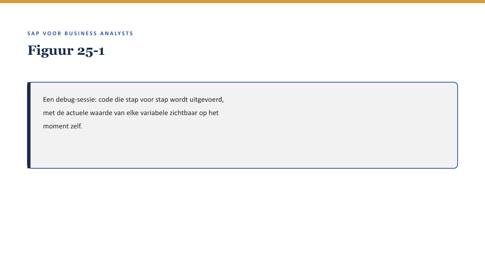
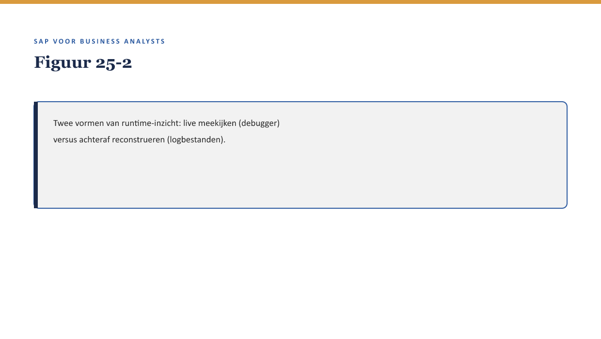

Deel 25 — Debugging & runtime-analyse
Slidedeck · Niveau 3 Expert · Cursus SAP voor Business Analysts · Ductus
Slidetypen: titleSlide, sectionSlide, bulletsSlide, statementSlide, quoteSlide, tableSlide, figureSlide, opdrachtSlide.
Slide 1 — titleSlide
Debugging & runtime-analyse Deel 25 · Niveau 3 Expert · Cursus SAP voor Business Analysts
Slide 2 — quoteSlide
“Lezen alleen gaat dit niet oplossen. Laten we het zien terwijl het gebeurt.” — Jelle Bakker
Slide 3 — figureSlide

Slide 4 — bulletsSlide
Wat we vandaag doen
- Wat een debugger doet, op BA-niveau
- Runtime-analyse breder: logbestanden
- Zinvol meekijken versus rolgrens-overschrijding
- Een concrete debug-vraag formuleren
Slide 5 — quoteSlide
Deel 5 leerde de bouwstenen herkennen in een stilstaand fragment. Dit deel leert dezelfde bouwstenen herkennen terwijl ze daadwerkelijk worden doorlopen. — Kernzin, reader §3
Slide 6 — figureSlide

Slide 7 — opdrachtSlide
Opdracht 25.1 — Debugger of logbestand?
Twee situaties — welk gereedschap past?
Slide 8 — sectionSlide
Zinvol of rolgrens-overschrijding?
Slide 9 — quoteSlide
Meekijken is een verdiepte vorm van “ik snap dit niet, gevolgd door een gerichte vraag” — geen uitnodiging om zelf te debuggen. — Kernzin, reader §5.2
Slide 10 — opdrachtSlide
Opdracht 25.2 — Zinvol of rolgrens-overschrijding?
Twee situaties uit een debug-sessie.
Slide 11 — opdrachtSlide
Opdracht 25.3 — Een debug-vraag formuleren
Voor het uitkeringsprobleem uit reader §1.
Slide 12 — bulletsSlide
Samenvatting in vijf zinnen
- Een debugger toont code tijdens uitvoering, met actuele variabelewaarden
- Runtime-analyse omvat ook logbestanden, nuttig bij zeldzame problemen
- Meekijken is waardevol om aannames te toetsen
- De rolgrens blijft: BA toetst, ontwikkelaar beslist en handelt
- Een goede debug-vraag pauzeert en vraagt naar een specifieke waarde
Slide 13 — titleSlide
Volgende deel BTP & extensibility Deel 26